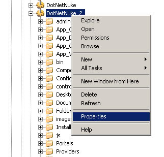
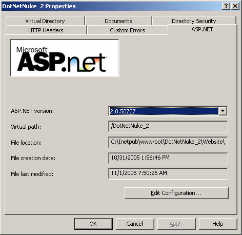

When creating a DotNetNuke website, for the most part you can use the default configuration options. However, if you wish to modify the configuration, this section includes more detailed information on how to configure Internet Information Server (IIS) for use with DotNetNuke.
1. In Internet Information Services (IIS) Manager, select Websites, right-click on the site you wish to configure and select the Properties option.

2. In the Properties dialog, you can configure the physical directory used for this wesbite, as well as the Application settings
3. On the ASp.NET tab of the Properties dialog, you can choose the version of ASP.NET you wish to use, as well as edit some of the web.config properties (using the Edit Configuration button).

Back to Welcome page.